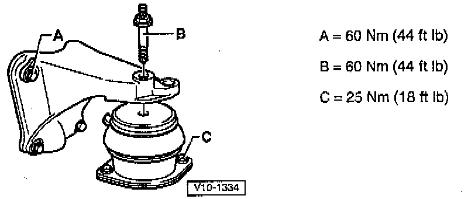
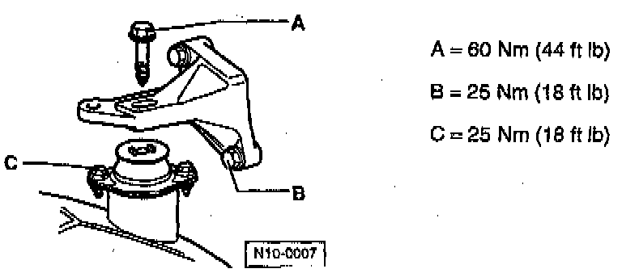

Operation CHARM
: Car repair manuals for everyone.
Home
>>
Volkswagen
>>
1997
>>
GTI (1H1) V6-2.8L (AAA)
>>
Repair and Diagnosis
>>
Engine, Cooling and Exhaust
>>
Engine
>>
Drive Belts, Mounts, Brackets and Accessories
>>
Engine Mount
>>
Service and Repair
>>
Engine Mountings
Engine Mountings
Front Engine Mount:
Right Rear Engine Mount:

Left Rear Engine Mount:

Refer to the illustrations when replacing engine mounts.